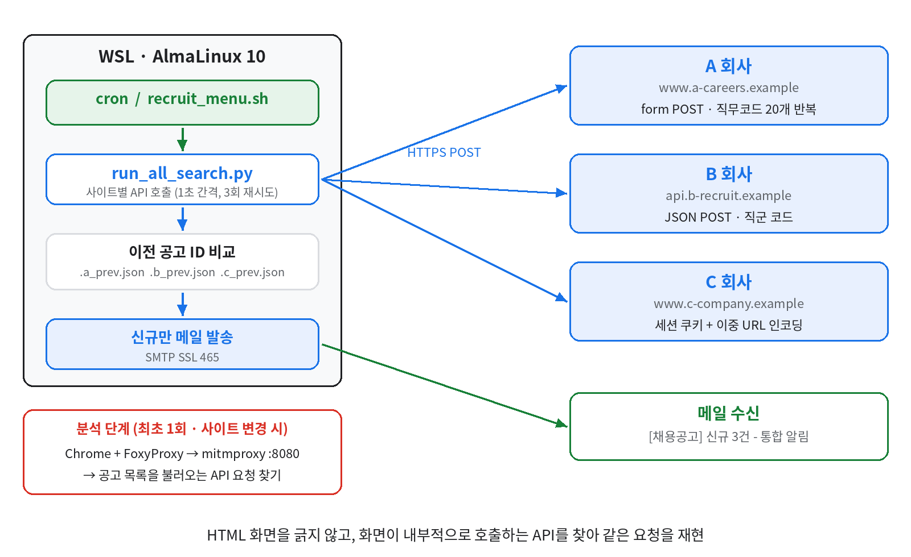
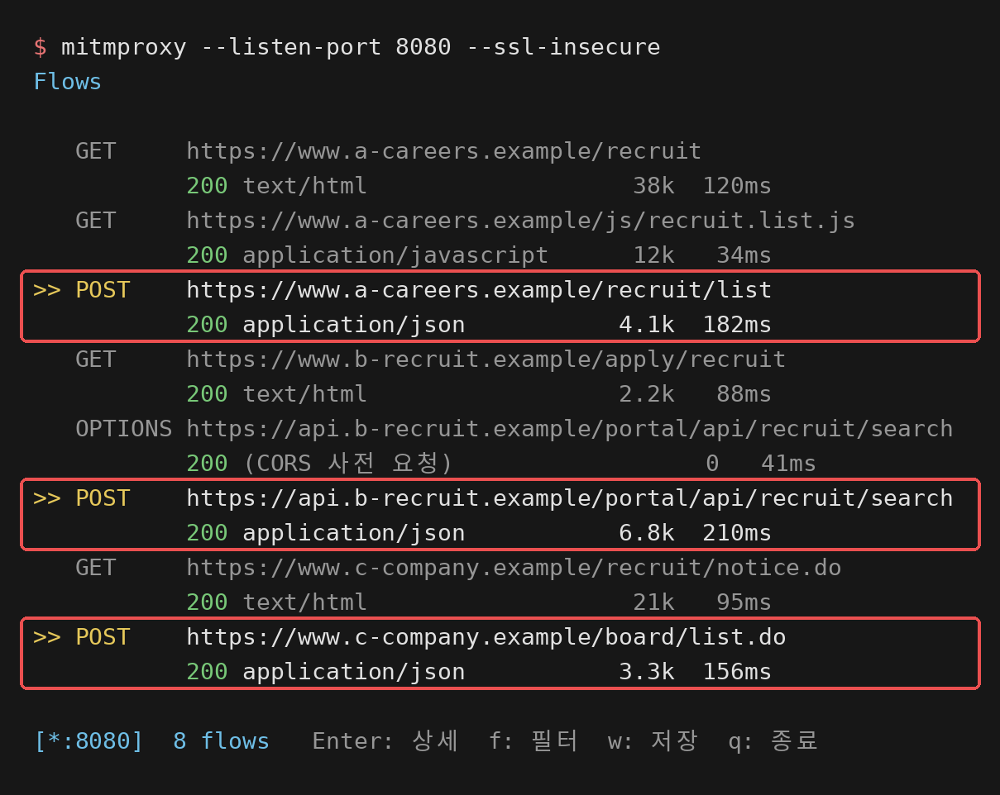
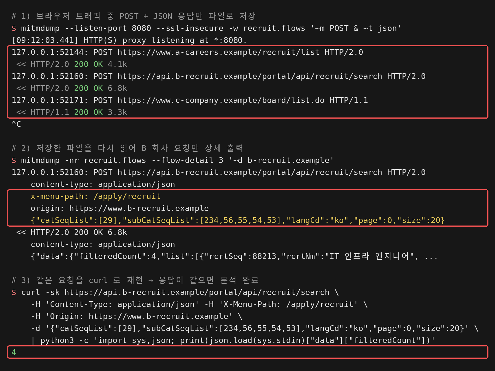
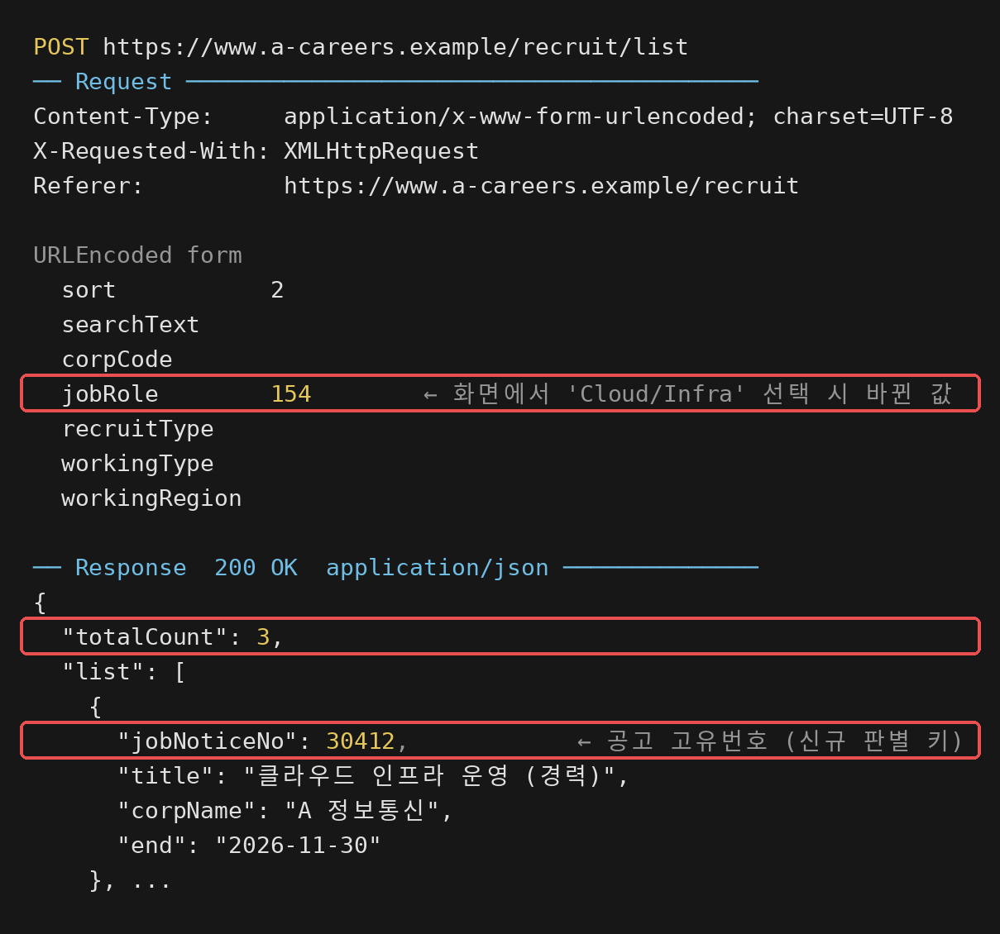
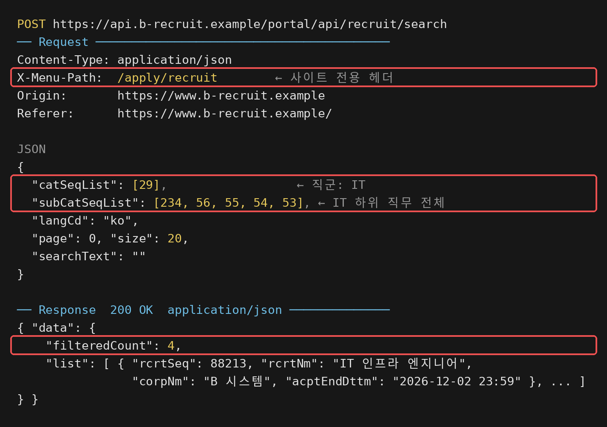
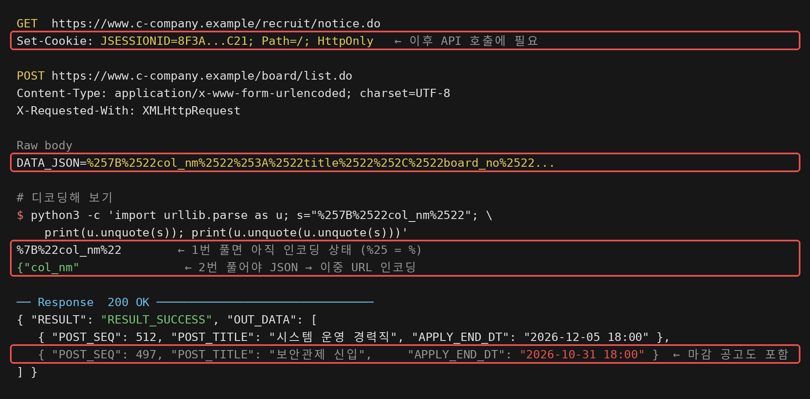
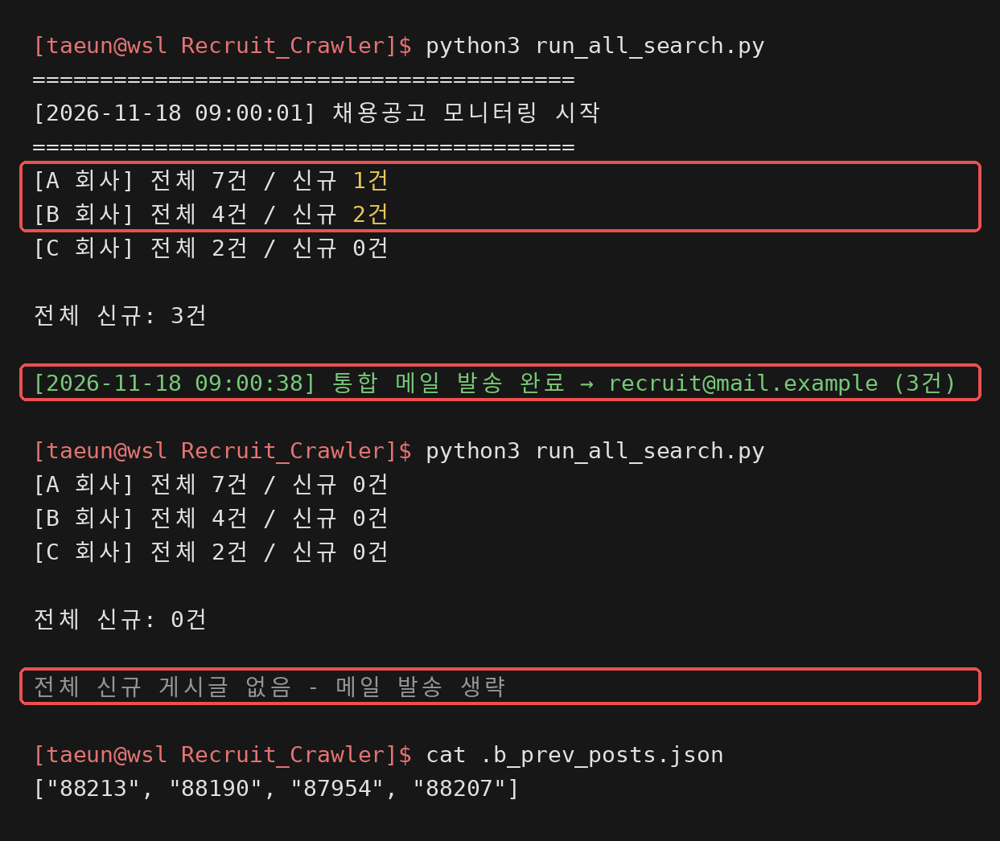
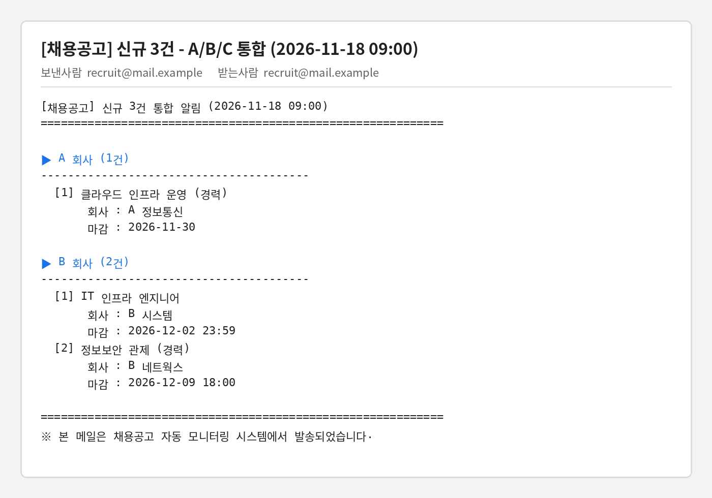

프로젝트 · 자동화 스크립트
채용공고 모니터링 크롤러
관심 직무의 채용공고를 회사 사이트 세 곳에서 매일 직접 확인하던 일을 자동화했습니다. 화면(HTML)을 긁지 않고, mitmproxy로 브라우저 트래픽을 가로채 사이트가 내부적으로 부르는 API를 찾아 같은 요청을 Python으로 재현했습니다. 이전에 본 공고와 비교해 새 공고만 메일로 보냅니다.
회사명은 A·B·C 회사로, 도메인과 API 경로·필드명은 예시 값(*.example)으로 바꿨습니다. 화면은 모두 예시입니다.
1. 구성

| 대상 | API 형식 | 특징 |
|---|---|---|
| A 회사 | form POST (x-www-form-urlencoded) | 직무코드 하나씩만 조회 가능 → 관심 직무코드 20개를 반복 호출 |
| B 회사 | JSON POST, 별도 API 서버 | 직군·하위직무 코드 목록으로 한 번에 조회, 사이트 전용 헤더 필요 |
| C 회사 | form POST 안에 JSON (이중 URL 인코딩) | 페이지 접속으로 세션 쿠키를 먼저 받아야 함, 마감 공고도 섞여 옴 |
Recruit_Crawler/
├── recruit_menu.sh # 대화형 실행 메뉴
├── run_all_search.py # 전체 통합 검색 + 메일 1통
├── A_search.py # 회사별 단독 실행 (각각 메일)
├── B_search.py
├── C_search.py
├── send_recruit_mail.py # 메일 발송 모듈
├── A_job_roles # A 회사 관심 직무코드 목록 (JSON)
└── .a_prev_posts.json ... # 회사별 이전 공고 ID (자동 생성)2. 실행 환경 (WSL · AlmaLinux 10)
Windows 업무 PC의 WSL에 AlmaLinux 10을 올려 실행했습니다. 사내망의 SSL 검사 장비가 HTTPS 인증서를 자체 인증서로 바꿔 끼우기 때문에, 처음에는 dnf와 pip 모두 인증서 오류로 실패했습니다.
# 증상
Curl error (60): SSL certificate problem: self-signed certificate in certificate chain
# 적용한 조치: 저장소 SSL 검증 해제 (사내망 한정)
echo 'sslverify=false' | sudo tee -a /etc/dnf/dnf.conf
sudo dnf install -y python3-requests
# pip 를 쓸 경우
pip install requests --trusted-host pypi.org --trusted-host files.pythonhosted.orgsudo cp corp-root-ca.crt /etc/pki/ca-trust/source/anchors/
sudo update-ca-trust
export REQUESTS_CA_BUNDLE=/etc/pki/tls/certs/ca-bundle.crt # requests 도 시스템 CA 사용3. 페이지 분석: 왜 HTML이 아니라 API인가
채용 페이지를 curl로 받아 보면 공고 목록이 없습니다. 화면 틀(HTML)만 먼저 오고, 브라우저의 JavaScript가 뒤에서 API를 따로 호출해 목록을 채우기 때문입니다. 그래서 그 API 요청을 찾아 똑같이 보내면, HTML 파싱 없이 깔끔한 JSON으로 공고를 받을 수 있습니다.
도구: mitmproxy / mitmdump
| 도구 | 역할 |
|---|---|
| mitmproxy | 브라우저와 사이트 사이에 끼는 프록시. HTTPS까지 풀어서 요청·응답을 화면에서 하나씩 열어 봄 |
| mitmdump | mitmproxy의 화면 없는 버전. 트래픽을 터미널에 흘려 보거나 파일로 저장(dump)하고, 저장한 파일을 다시 읽어 필터링 |
| mitmweb | 같은 기능을 웹 화면(8081)으로 제공 |
| FoxyProxy (Chrome 확장) | 분석할 사이트만 프록시를 거치게 브라우저 설정을 빠르게 전환 |
브라우저 개발자 도구(Network 탭)로도 볼 수 있지만, mitmproxy는 요청을 파일로 남겨 두고 나중에 다시 비교할 수 있고, 리눅스 터미널에서 필터와 재현까지 이어서 할 수 있어 선택했습니다.
준비
# 설치 (WSL)
pip install mitmproxy
# 프록시 실행 — 사내 SSL 검사 장비 때문에 상위 인증서 검증은 끔
mitmproxy --listen-port 8080 --ssl-insecure
# 브라우저 쪽
# 1) FoxyProxy 에 127.0.0.1:8080 프록시 추가 → 분석할 때만 켬
# 2) 프록시를 켠 상태로 http://mitm.it 접속 → mitmproxy 인증서 설치
# (설치하지 않으면 HTTPS 사이트가 인증서 오류로 열리지 않음)4. 분석 절차
- 대상 페이지 열기: 프록시를 켠 브라우저로 채용 페이지 접속
- 화면 조작: 직무 필터 선택, 페이지 넘기기, 검색 등 목록이 바뀌는 동작을 함
- 요청 찾기: 동작 직후에 생긴 요청 중
POST이면서 응답이application/json인 것 찾기 (이미지·CSS·JS는 무시) - 요청 해부: URL, 필수 헤더, 본문 형식(form·JSON), 화면 조작에 따라 바뀌는 값(직무코드 등) 확인
- 응답 해부: 공고 목록 위치, 공고 고유번호(신규 판별 키), 제목·회사·마감일 필드 확인
- 재현: curl로 같은 요청을 보내 같은 응답이 오는지 확인 → 헤더를 하나씩 빼 보며 꼭 필요한 것만 남김
- 코드화: Python requests로 옮기고 재시도·딜레이 추가

mitmdump로 저장하고 다시 보기
화면에서 하나씩 보는 대신 mitmdump로 필요한 요청만 파일에 저장해 두면, 나중에 사이트가 바뀌었을 때 예전 요청과 새 요청을 비교할 수 있습니다.
# POST + JSON 응답만 저장
mitmdump --listen-port 8080 --ssl-insecure -w recruit.flows '~m POST & ~t json'
# 저장한 파일에서 특정 도메인만 상세 출력 (-n: 프록시를 띄우지 않고 읽기만)
mitmdump -nr recruit.flows --flow-detail 3 '~d b-recruit.example'
# 자주 쓰는 필터
# ~m POST 메서드 ~d 도메인 ~u URL 일부
# ~t json Content-Type ~c 200 응답코드 !~a 정적 파일 제외
5. 사이트별 분석 결과
A 회사 — form POST, 직무코드 반복

jobRole 값만 바뀜 → 공고 고유번호는 jobNoticeNo (예시 화면)- 한 번에 직무코드 하나만 보낼 수 있어서, 화면에서 관심 직무를 하나씩 눌러 보며 코드 값을 모아
A_job_roles파일로 정리했습니다 (Cloud/Infra, IT 운영, IT 보안 등 20개). - 코드 목록을 파일로 뺐기 때문에 직무를 추가·삭제할 때 코드는 고치지 않아도 됩니다.
url = "https://www.a-careers.example/recruit/list"
headers = {
"Content-Type": "application/x-www-form-urlencoded",
"X-Requested-With": "XMLHttpRequest",
"Referer": "https://www.a-careers.example/recruit",
}
for code, name in job_roles.items(): # A_job_roles: {"154": "Cloud/Infra", ...}
data = {"sort": 2, "jobRole": code, "searchText": "", "corpCode": "",
"recruitType": "", "workingType": "", "workingRegion": ""}
res = requests.post(url, headers=headers, data=data, timeout=10)
result = res.json()
if result["totalCount"] > 0:
all_results.extend(result["list"]) # jobNoticeNo, title, corpName, end
time.sleep(1) # 사이트 부담을 줄이려고 1초 간격B 회사 — JSON POST, 별도 API 서버

api.)로 JSON을 보냄, 사이트 전용 헤더 확인 (예시 화면)- 화면 도메인과 API 도메인이 달라 브라우저가 먼저
OPTIONS(CORS 사전 요청)를 보냅니다. 스크립트는 브라우저가 아니라서 OPTIONS 없이 POST만 보내면 됩니다. - 직군 코드(IT)와 하위 직무 코드 목록을 한 번에 보내므로 요청 한 번으로 끝납니다.
- 브라우저가 보낸 헤더 중 사이트 전용 헤더(
X-Menu-Path)와Origin,Referer를 그대로 함께 보냅니다.
url = "https://api.b-recruit.example/portal/api/recruit/search"
headers = {
"Content-Type": "application/json",
"X-Menu-Path": "/apply/recruit",
"Origin": "https://www.b-recruit.example",
"Referer": "https://www.b-recruit.example/",
}
data = {"catSeqList": [29], "subCatSeqList": [234, 56, 55, 54, 53],
"langCd": "ko", "page": 0, "size": 20, "searchText": ""}
res = requests.post(url, headers=headers, json=data, timeout=10) # json= → 자동으로 JSON 본문
posts = res.json()["data"]["list"] # rcrtSeq, rcrtNm, corpNm, acptEndDttmC 회사 — 세션 쿠키 + 이중 URL 인코딩

%25를 보고 이중 인코딩임을 확인 / 마감 공고도 섞여 옴 (예시 화면)- 세션 쿠키: 브라우저 흐름을 보면 목록 페이지에 접속할 때
JSESSIONID쿠키를 받고, API 호출에 그 쿠키를 함께 보내고 있었습니다.requests.Session()으로 페이지를 먼저 열어 쿠키를 받은 뒤 API를 호출합니다. - 이중 URL 인코딩: 본문이
DATA_JSON=%257B%2522...형태였습니다.%25는%자체를 인코딩한 것이라 한 번 풀면%7B%22..., 두 번 풀어야{"...가 됩니다. 사이트 프레임워크(AngularJS 계열)가 JSON을 인코딩한 뒤 form 전송 과정에서 한 번 더 인코딩하는 구조라, 스크립트도 두 번 인코딩해서 보냅니다. - 마감 공고 필터: 응답에 마감된 공고도 함께 와서, 마감일이 지금보다 뒤인 것만 남깁니다.
BASE = "https://www.c-company.example"
session = requests.Session()
session.get(f"{BASE}/recruit/notice.do", timeout=15) # 1) 세션 쿠키 받기
payload = {"col_nm": "title", "col_val": "", "board_no": "15",
"paging": {"use": True, "pageNo": 1, "pageSize": 10}}
raw = json.dumps(payload, separators=(",", ":"))
encoded = urllib.parse.quote(urllib.parse.quote(raw)) # 2) 이중 URL 인코딩
res = session.post(f"{BASE}/board/list.do", data=f"DATA_JSON={encoded}",
headers={"Content-Type": "application/x-www-form-urlencoded; charset=UTF-8",
"X-Requested-With": "XMLHttpRequest",
"Referer": f"{BASE}/recruit/notice.do"}, timeout=15)
result = res.json()
if result.get("RESULT") != "RESULT_SUCCESS":
raise Exception(result.get("RESULT_MSG"))
def is_open(end): # 3) 마감 공고 제외
try:
return datetime.strptime(end, "%Y-%m-%d %H:%M") > datetime.now()
except ValueError:
return True
posts = [p for p in result["OUT_DATA"] if is_open(p.get("APPLY_END_DT", ""))]6. 신규 공고 판별과 메일
회사마다 마지막으로 본 공고 고유번호 목록을 숨김 파일(.a_prev_posts.json 등)에 저장하고, 이번 결과와의 차집합으로 신규를 찾습니다.
prev_ids = load_prev() # 지난번 공고 ID 집합
current_ids = {str(p["jobNoticeNo"]) for p in all_results}
new_ids = current_ids - prev_ids # 이번에 처음 보는 공고
new_posts = [p for p in all_results if str(p["jobNoticeNo"]) in new_ids]
save_prev(current_ids) # 다음 비교용으로 저장- 처음 실행하면 이전 파일이 없어 현재 공고 전체가 신규로 잡힙니다. 두 번째 실행부터 진짜 새 공고만 알립니다.
- 마감되어 목록에서 빠진 공고는 저장 목록에서도 빠지므로 파일이 계속 커지지 않습니다.
run_all_search.py는 세 회사 결과를 모아 메일 한 통으로, 회사별 스크립트는 각각 메일로 보냅니다. 신규가 없으면 메일을 보내지 않습니다.


7. 실행 방법
# 대화형 메뉴
./recruit_menu.sh
# 1) 전체 통합 검색 + 메일 발송
# 2) A 회사 검색 3) B 회사 검색 4) C 회사 검색
# 5) 전체 개별 검색 (각각 메일)
# 0) 종료
# 직접 실행
python3 run_all_search.pyWSL에서 cron 자동 실행
WSL은 기본적으로 systemd와 cron이 돌지 않아서, crontab만 등록하면 실행되지 않습니다.
# /etc/wsl.conf — WSL 에서 systemd 사용
[boot]
systemd=true
# Windows PowerShell 에서 WSL 재시작
wsl --shutdown
# WSL 안에서 cron 실행
sudo dnf install -y cronie
sudo systemctl enable --now crond
# crontab -e — 평일 오전 9시
0 9 * * 1-5 cd $HOME/Recruit_Crawler && python3 run_all_search.py >> $HOME/Recruit_Crawler/logs/recruit.log 2>&1- 일반 사용자 crontab에서
/var/log에는 쓸 권한이 없어서 로그는 홈 아래logs/에 남깁니다. - WSL은 Windows에서 창을 모두 닫으면 잠시 뒤 종료됩니다. PC가 켜져 있어도 WSL이 꺼져 있으면 cron이 돌지 않으므로, Windows 작업 스케줄러에
wsl -d AlmaLinux-10 -u 사용자 -- python3 ~/Recruit_Crawler/run_all_search.py를 등록하는 방법도 있습니다.
8. 운영하며 보완한 점·보완할 점
| 항목 | 문제 | 보완 |
|---|---|---|
| 메일 계정 정보 | SMTP 비밀번호가 스크립트에 그대로 들어 있음 → Git 저장소나 공유 폴더로 퍼지면 노출 | 별도 설정 파일(~/.recruit.env, 권한 600)이나 환경변수로 분리, .gitignore에 추가 |
| 일부 요청 실패 시 오탐 | A 회사 직무코드 중 하나가 3번 모두 실패해도 나머지 결과로 이전 목록을 덮어씀 → 다음 실행 때 그 공고들이 "신규"로 다시 알림 | 모든 요청이 성공했을 때만 save_prev() 실행, 실패하면 이전 목록 유지 |
| 첫 페이지만 조회 | B 회사 20건, C 회사 10건까지만 가져옴 → 공고가 많은 시기에 누락 가능 | 응답의 전체 건수(filteredCount)와 비교해 페이지를 넘기며 수집 |
| SSL 검증 해제 | verify=False, SMTP CERT_NONE은 중간자 공격을 막지 못함 | 사내 루트 인증서를 등록하고 REQUESTS_CA_BUNDLE 사용 (2번 참고) |
| 코드 중복 | 통합 스크립트와 회사별 스크립트에 같은 수집 코드가 두 벌 | 회사별 fetch() 함수를 모듈로 두고 통합·개별 실행이 같이 import |
| 첫 줄 오타 | 통합 스크립트 첫 줄이 # #!/usr/bin/env python3라 ./로 실행하면 셸이 해석 | #!/usr/bin/env python3로 수정 (메뉴는 python3로 실행해서 영향 없음) |
| 사이트 구조 변경 | API 경로나 필드명이 바뀌면 KeyError로 조용히 실패 | 실패 시 "수집 실패" 메일을 따로 보내고, 저장해 둔 recruit.flows와 새 요청을 비교해 다시 맞춤 |